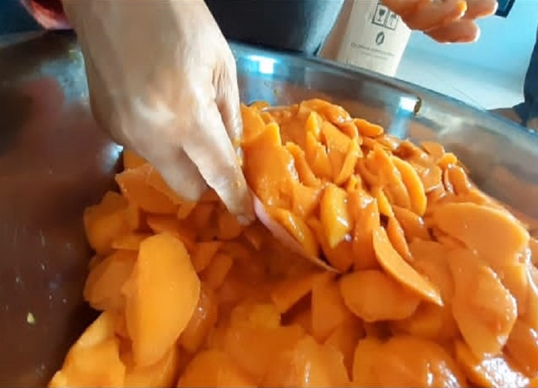

Jus Mangga
Proses Awal
Untuk Pembuatan Jus Mangga, kita menggunakan jenis mangga Gedong. Bahan-bahan yang digunakan untuk membuat Jus Mangga ini diantaranya mangga, gula, dan air.
Pertama penyortiran buah mangga yang siap diolah menjadi Jus. Selanjutnya proses pencucian dan pengupasan buah mangga. setelah pengupasan, dilanjut dengan penimbangan.
10 Kg buah mangga utuh setelah dikupas menjadi 4,25 Kg.

Proses Kedua

Proses yang kedua yaitu perendaman botol kemasan menggunakan air hangat untuk mensterilisasikan kemasan. Bersamaan dengan perendaman botol, mangga yang sudah di kupas dan ditimbang di haluskan dengan menggunakan blender.
Setelah itu rebus air sampai mendidih kemudian masukkan gula sampai melebur. Setelah gula dan air tercampur masukkan mangga yang sudah dihaluskan dan tunggu sampai mendidih.
Setelah hangat kemudian disaring lalu tunggu sampai benar benar dingin.
Proses Ketiga
Proses ketiga yaitu pengemasan. Dalam proses ini, Jus Mangga yang sudah ditiriskan dimasukkan ke botol kemasan.
Dan setelah dikemas, Jus Mangga siap untuk dipasarkan ke berbagai toko. Untuk 1 botol Jus Mangga dibandrol dengan harga 10.000 rupiah.